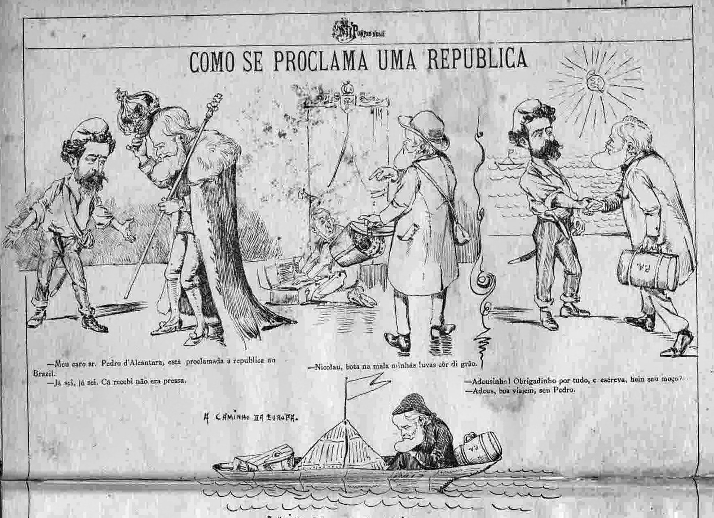
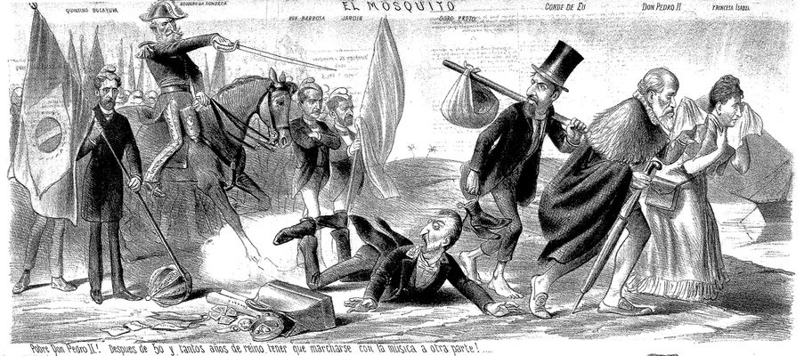
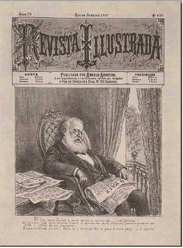
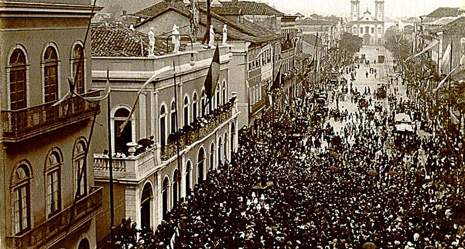
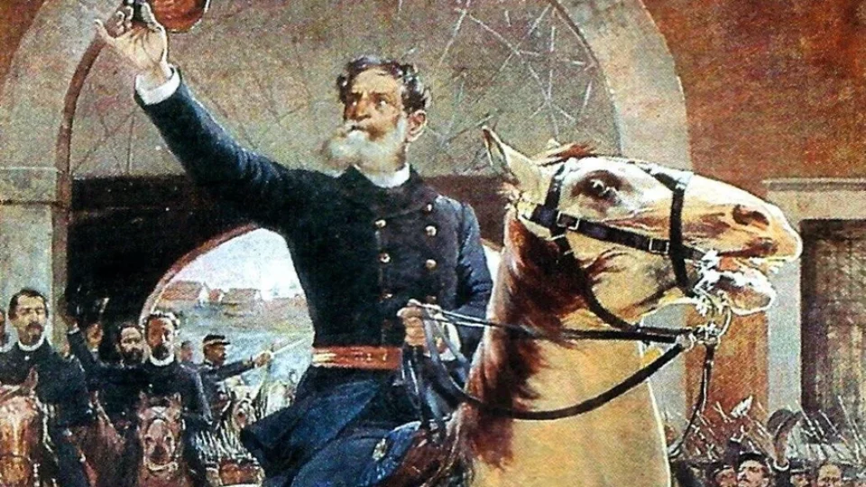

Pintura representando Marechal Deodoro proclamando a República.

Fotografia histórica de militares republicanos em 1889.

Gravura ilustrando a sociedade e política do início da República.

Outra pintura representando a cena da Proclamação da República.

Página de jornal noticiando a Proclamação da República em 1889.

Ata oficial da reunião que instaurou o regime republicano no Brasil.